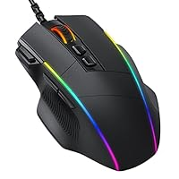
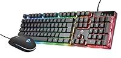
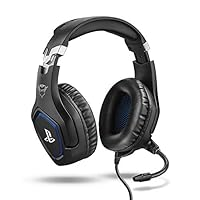
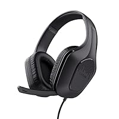

GAME VERSE
GAME VERSE:L'UNIVERSO DEI VIDEOGIOCHI
MIGLIORI PRODOTTI DA GAMING

Dacoity Mouse RGB Ergonomico
caratteristiche:【Mouse ergonomico per computer】Questo mouse per computer è dotato di aree speciali di riposo per il pollice su entrambi i lati, consentendo un utilizzo prolungato senza affaticamento. La superficie liscia fornisce una presa comoda e un controllo senza sforzo.
【Retroilluminazione RGB personalizzabile】Il pulsante di illuminazione inferiore sul mouse ergonomico con cavo consente di passare rapidamente tra 7 modalità di illuminazione. Inoltre, è possibile personalizzare la luminosità e la velocità dell'illuminazione per abbinarle perfettamente allo stile della scrivania del vostro ufficio utilizzando il software. 𝐏𝐫𝐞𝐦𝐞𝐫𝐞 𝐚 𝐥𝐮𝐧𝐠𝐨 𝐩𝐞𝐫 𝐬𝐩𝐞𝐠𝐧𝐞𝐫𝐞 𝐥𝐞 𝐥𝐮𝐜𝐢.
【DPI ad alta precisione】Ci sono 5 livelli DPI disponibili: 1200/2400/3500/5500/8000. I pulsanti programmabili per le attività quotidiane e il gioco, insieme agli aggiustamenti del DPI e del tasso di polling, raggiungono un perfetto equilibrio tra precisione e accuratezza. 𝐍𝐨𝐭𝐚: 𝐥𝐞 𝐟𝐮𝐧𝐳𝐢𝐨𝐧𝐚𝐥𝐢𝐭à 𝐩𝐫𝐨𝐠𝐫𝐚𝐦𝐦𝐚𝐛𝐢𝐥𝐢 𝐬𝐨𝐧𝐨 𝐜𝐨𝐦𝐩𝐚𝐭𝐢𝐛𝐢𝐥𝐢 𝐬𝐨𝐥𝐨 𝐜𝐨𝐧 𝐢 𝐬𝐢𝐬𝐭𝐞𝐦𝐢 𝐖𝐢𝐧𝐝𝐨𝐰𝐬.
【8 pulsanti programmabili e pulsante di fuoco】Tutti e 8 i pulsanti sono programmabili per funzioni come l'aggiustamento del DPI, la creazione di macro, il controllo RGB e il controllo dei media, rendendo questo mouse da gioco più intelligente. Il mouse include anche un pulsante di fuoco dedicato per attivare rapidamente il fuoco continuo. (✿ Nota: i driver possono essere trovati sul CD dei driver incluso o scaricati dal sito web menzionato nel manuale.)
【Ampia Compatibilità e Resi Gratuiti】Il cavo lungo 1,56 metri è affidabile e adatto all'uso quotidiano. È compatibile con i sistemi operativi Windows XP, Vista, 7, 8 e 10. Se riscontrate problemi durante l'uso, vi preghiamo di contattarci immediatamente; offriamo un servizio di reso e sostituzione valido per un anno.
LE MIGLIORI TASTIERE

EMPIRE GAMING - Kit MK800 Cablata -Tastiera Gaming QWERTY (Italiana-Layout) RGB 105, 19 Tasti

Trust Gaming GXT 838 Azor
LE MIGLIORI CUFFIE

Trust Gaming GXT 488

Trust Gaming GXT 415 Zirox